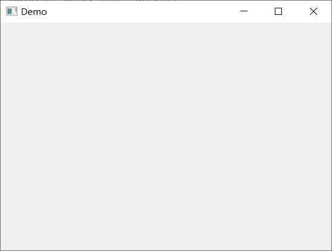
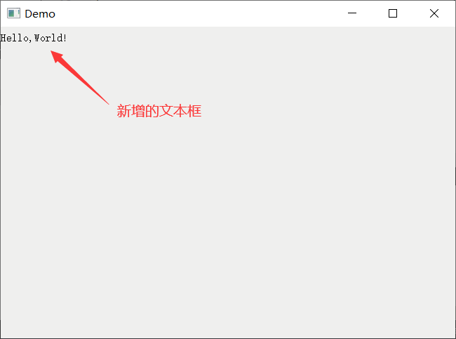

分析第一个Qt程序
前面章节中，通过在 xxx.ui 文件中拖拽 Label 组件，设计出了一个显示 "Hello,World!" 的窗口，如下图所示：

图 1 简单的界面
本节我们完全舍弃 xxx.ui 文件，亲手编写代码实现图 1 所示的界面。

图 2 创建不带 ui 文件的图形界面项目
最终创建的项目结构如下图所示：

图 3 项目结构
Demo.pro 是项目文件，文件中的内容可以手动修改，我们会在《Qt pro文件详解》一节中详细讲解，本节不需要修改此文件。接下来，我们逐一介绍 main.cpp、mainwindow.h 和 mainwindow.cpp 这 3 个文件。
我们知道，C/C++ 程序中 main() 函数的语法格式是固定的：
Qt 界面程序中的 main() 函数也有固定的格式：
双击图 3 所示的 main.cpp 文件，可以看到该文件包含的所有代码：
双击图 3 所示的 mainwindow.h 和 mainwindow.cpp 文件，可以看到它们各自包含的代码：
直接运行程序，会输出下图所示的界面：
图 4 看到的就是 main() 函数中创建的 w 主窗口。由于没有往 w 窗口中放置任何组件，所以 w 是一个空白窗口。
由此，我们就成功设计了一个包含文本框的窗口，这也是我们编写的第一个 Qt 程序。
图 1 简单的界面
本节我们完全舍弃 xxx.ui 文件，亲手编写代码实现图 1 所示的界面。
创建项目
首先，打开 Qt Creator 并创建一个 Qt Widgets Application 项目，创建过程可以参考 《编写第一个Qt程序》一节。需要注意的是，我们要创建一个不带 xxx.ui 文件的项目，如下图所示：图 2 创建不带 ui 文件的图形界面项目
最终创建的项目结构如下图所示：
图 3 项目结构
Demo.pro 是项目文件，文件中的内容可以手动修改，我们会在《Qt pro文件详解》一节中详细讲解，本节不需要修改此文件。接下来，我们逐一介绍 main.cpp、mainwindow.h 和 mainwindow.cpp 这 3 个文件。
1) main.cpp
main.cpp 是主函数文件，内部主要包含应用程序的入口函数，也就是 main() 函数。我们知道，C/C++ 程序中 main() 函数的语法格式是固定的：
int main(int argc, char *argv[]){
//填充代码
return 0;
}
Qt 界面程序中的 main() 函数也有固定的格式：
int main(int argc, char *argv[])
{
QApplication a(argc, argv);
//填充代码
return a.exec();
}
对于刚刚学习 Qt 的读者，暂时不用了解第 3 行和第 5 行代码的含义，只要记住：使用 Qt 框架编写带界面的应用程序，main() 函数中必须包含第 3 行和第 5 行代码，否则程序无法正常运行。双击图 3 所示的 main.cpp 文件，可以看到该文件包含的所有代码：
#include "mainwindow.h"
#include <QApplication>
int main(int argc, char *argv[])
{
QApplication a(argc, argv);
MainWindow w;
w.show();
return a.exec();
}
除了第 6、8 行代码外，其它代码的含义分别是：-
1~2 行：由于 main() 函数中分别定义了 QApplication 和 MainWindow 类的对象，因此需要引入 mainwindows.h 和 QApplication 头文件。mainwindow.h 文件是我们自己创建的，引入时用
" "双引号括起来；QApplication 是 Qt 提供给我们的，引入时用<>括起来。 - 第 7 行：MainWindow 是自定义的类，继承自 QMainWindow 主窗口类，因此 MainWindow 也是一个主窗口类。w 是 MainWindow 类实例化出的对象，表示一个主窗口。
- 第 8 行：默认情况下，Qt 提供的所有组件（控件、部件）都是隐藏的，不会自动显示。通过调用 MainWindow 类提供的 show() 方法，w 窗口就可以在程序运行后显示出来。
2) mainwindow.h和mainwindow.cpp
创建项目时，我们在图 2 所示的对话框中定义了一个继承自 QMainWindow 的主窗口类，并起名为 MianWindow，该类的定义部分位于 mainwindow.h 头文件中，实现部分位于 mainwindow.cpp 源文件中。双击图 3 所示的 mainwindow.h 和 mainwindow.cpp 文件，可以看到它们各自包含的代码：
//mainwindow.h
#ifndef MAINWINDOW_H
#define MAINWINDOW_H
#include <QMainWindow>
class MainWindow : public QMainWindow
{
Q_OBJECT
public:
MainWindow(QWidget *parent = 0);
~MainWindow();
};
//mainwindow.cpp
#endif // MAINWINDOW_H
#include "mainwindow.h"
MainWindow::MainWindow(QWidget *parent)
: QMainWindow(parent)
{
}
MainWindow::~MainWindow()
{
}
初始状态下，MainWindow 类由 Q_OBJECT、构造函数和析构函数组成，这里重点介绍一下 Q_OBJECT 和构造函数：
- Q_OBJECT：本质是一个已定义好的宏，所有需要“信号和槽”功能的组件都必须将 Q_OBJECT 作为 private 属性成员引入到类中。本节设计的界面程序不会用到“信号和槽”，因此可以删除 Q_OBJECT。有关信号和槽，我们会在《Qt信号和槽机制详解》一节详细介绍。
- 带参的构造函数：QWidget 是所有组件的基类，借助 parent 指针，可以为当前窗口指定父窗口。例如图 1 中，QLabel 文本框位于主窗口中，主窗口就是它的父窗口。当父窗口被删除时，所有子窗口也会随之一起删除。当然也可以不指定父窗口，那么当前窗口就会作为一个独立的窗口，不会受到其它窗口的影响。
直接运行程序，会输出下图所示的界面：

图 4 空白主窗口
图 4 空白主窗口
图 4 看到的就是 main() 函数中创建的 w 主窗口。由于没有往 w 窗口中放置任何组件，所以 w 是一个空白窗口。
编码实现简易的窗口界面
我们尝试向 w 主窗口添加一个文本框，需要对 MainWindow 类进行修改。修改后的 MainWindow 类如下：
//mainwindow.h
#ifndef MAINWINDOW_H
#define MAINWINDOW_H
#include <QMainWindow>
#include <QLabel> // 引入 QLable 文件框组件的头文件
class MainWindow : public QMainWindow
{
Q_OBJECT
public:
MainWindow(QWidget *parent = 0);
~MainWindow();
private:
QLabel *lab; // 定义一个私有的 QLabel 指针对象
};
#endif // MAINWINDOW_H
//mainwindow.cpp
#include "mainwindow.h"
MainWindow::MainWindow(QWidget *parent)
: QMainWindow(parent)
{
// 创建一个 QLable 对象
this->lab = new QLabel("Hello,World!",this);
}
MainWindow::~MainWindow()
{
}
和先前空的 MainWindow 类相比，做了如下修改：
-
添加了一个 QLabel 类的指针对象，相应地要引入
<QLabel>头文件； - 在构造函数中定义了一个 QLabel 类的文本框对象，通过调用它的带参构造函数，设置它的父对象为当前类的对象，同时设置 "Hello,World!" 为要显示的文本信息。
再次运行程序，显示的窗口如下图所示：有关 QLabel 组件的用法，我们会在《Qt QLabel文本框的使用》一节详细讲解，这里不用深究具体的语法。

图 5 带文本框的主窗口
图 5 带文本框的主窗口
图 5 中，"Hello,World!" 文本框的父窗口是主窗口，所以文本框位于主窗口中（位置默认在窗口的左上角），主窗口关闭时文本框也会随之关闭。图 1 和图 5 是类似的，区别在于图 5 中的 "Hello, World!" 没有加粗，也没有调整它在主窗口中的位置，这些都可以通过编码实现，后续讲 QLabel 时会做详细介绍。
由此，我们就成功设计了一个包含文本框的窗口，这也是我们编写的第一个 Qt 程序。
关注公众号「站长严长生」，在手机上阅读所有教程，随时随地都能学习。内含一款搜索神器，免费下载全网书籍和视频。

微信扫码关注公众号